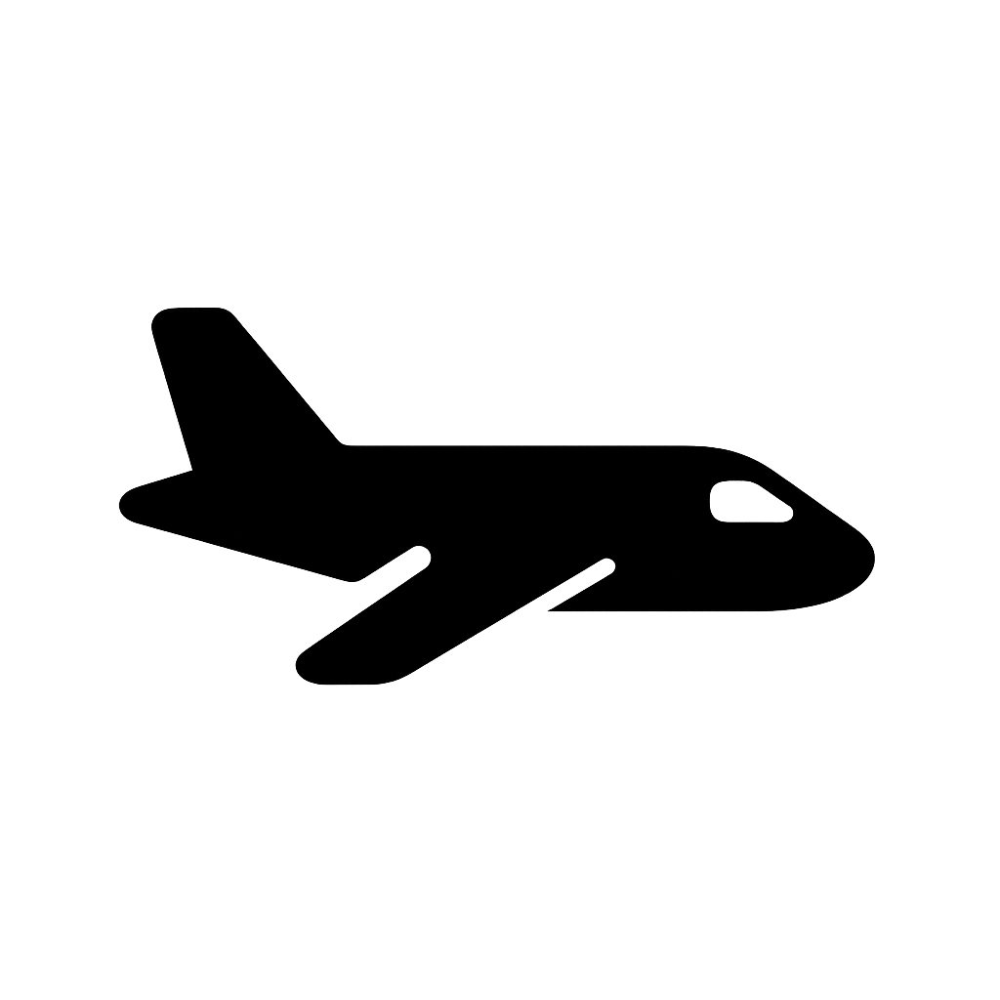
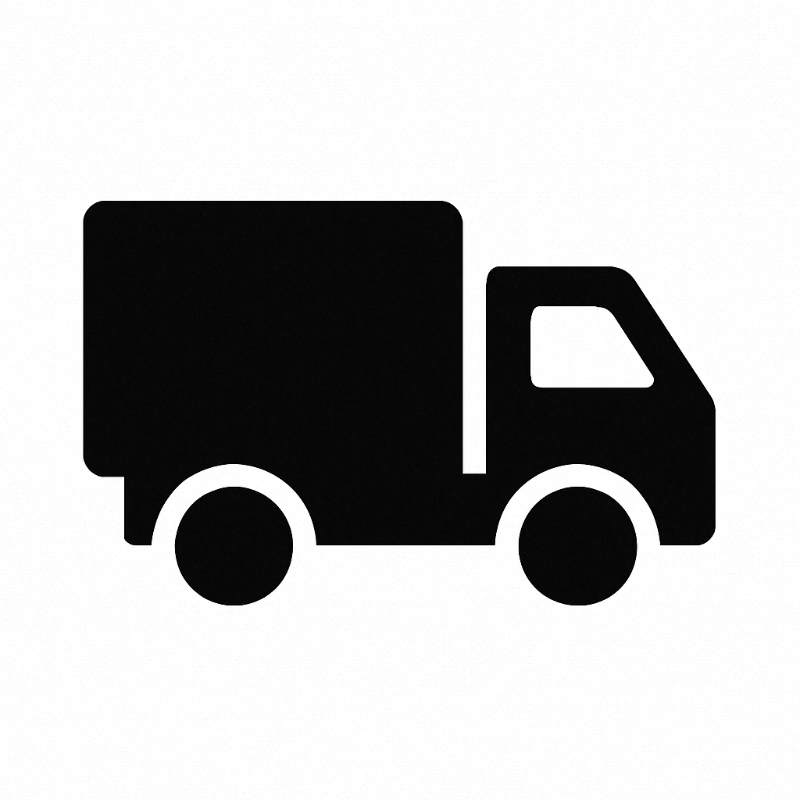

Test Grid (Visual Preview)
This simulates how a 3x3 bingo card would look with non-square icons:


This simulates how a 3x3 bingo card would look with non-square icons:
Click the button below to test PDF generation with non-square icons: